Moraine Lake se nachází v srdci národního parku Banff v provincii Alberta a právem patří mezi nejfotografovanější přírodní lokality na světě. Toto ledovcové jezero leží v nadmořské výšce 1 885 metrů v majestátním údolí Valley of the Ten Peaks (Údolí deseti vrcholů). Právě tato poloha, obklopená deseti ostrými skalnatými štíty, mu dodává jeho nezaměnitelný dramatický ráz. Panorama s těmito vrcholy bylo v minulosti dokonce vyobrazeno na kanadské dvacetidolarové bankovce, díky čemuž se mu přezdívá „Twenty Dollar View". Z geologického hlediska je jezero výsledkem činnosti ledovců z poslední doby ledové. Své jméno získalo podle morény, což je kamenný val a nános sedimentů, který zde ustupující ledovec zanechal a vytvořil tak přirozenou hráz. Nejpozoruhodnějším rysem jezera je jeho zářivě tyrkysová barva. Tento jev nezpůsobují řasy, ale tzv. ledovcové mléko (rock flour). Jde o velmi jemné částice horniny vznikající třením ledovců o skalní podloží, které se splavují do jezera a zůstávají rozptýleny ve vodě. Když na ně dopadá sluneční světlo, tyto částice pohlcují barvy a odrážejí pouze modrozelené spektrum, což vytváří onen ikonický neonový efekt, který vrcholí v letních měsících při nejvyšším tání ledovců.

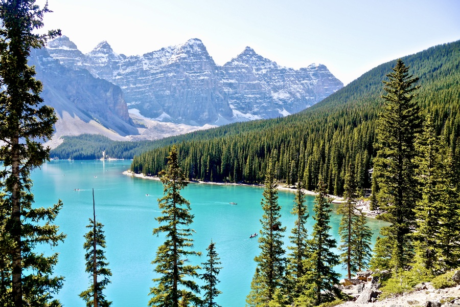
Okolí jezera je tvořeno fascinující mozaikou ekosystémů, od hlubokých horských lesů až po barevné alpínské louky. Tato divočina poskytuje útočiště vzácným druhům zvířat. Nezpochybnitelným králem oblasti je medvěd grizzly, který se v údolí pase na bobulích a koříncích; kvůli jeho ochraně musí turisté na stezky často vstupovat v doprovodu alespoň tří dalších lidí. Na lesních mýtinách se pasou majestátní jeleni wapiti, jejichž troubení se na podzim rozléhá údolím. Nad hranicí lesa, na strmých skalnatých srázech, můžete spatřit neuvěřitelně obratné horské kozy s hustou bílou srstí. U kamenného valu přímo u břehu pak na turisty často vykukují svišti, kteří při sebemenším náznaku nebezpečí vydávají pronikavé varovné hvízdání. V současnosti je Moraine Lake symbolem nejen krásy, ale i přísné ochrany přírody. Kvůli extrémní popularitě byl v roce 2023 zakázán příjezd soukromým autům, aby se snížil hluk a emise. Návštěvníci tak k jezeru přijíždějí hromadnou dopravou, což zajišťuje, že si toto unikátní místo zachová svou divokou atmosféru i pro budoucí generace.
Moraine Lake, ležící v srdci národního parku Banff v provincii Alberta, patří k nejuznávanějším přírodním divům světa. Toto ledovcové jezero se nachází v nadmořské výšce 1 885 metrů v majestátním údolí Valley of the Ten Peaks (Údolí deseti vrcholů). Právě dramatický prstenec deseti ostrých štítů mu dodává nezaměnitelný ráz, který byl v letech 1969 a 1979 vyobrazen na kanadské dvacetidolarové bankovce, čímž vzniklo slavné označení „Twenty Dollar View". Ačkoliv pro západní svět jezero zdokumentovali průzkumníci až na konci 19. století, oblast byla po tisíciletí domovem a lovištěm původních obyvatel Severní Ameriky. Ti krajinu využívali k pohybu v náročném horském terénu dávno před příchodem Evropanů. Pro moderní historii jezero „objevil" v roce 1899 americký průzkumník Walter Wilcox, který byl natolik fascinován okolní scenérií, že pojmenoval celé údolí podle deseti dominantních vrcholů. Právě Wilcox dal jezeru název „Moraine", podle geologického nánosu kamenů a sedimentů (morény), které zde zanechal ustupující ledovec a které vytvořily přirozenou hráz jezera.
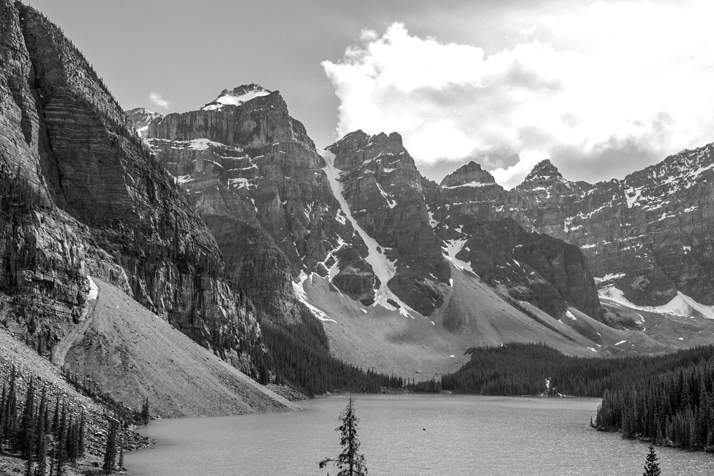
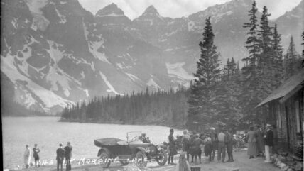
Z přírodního hlediska je nejvíce fascinující zářivě tyrkysová barva vody. Tento jev vzniká díky tzv. ledovcovému mléku (rock flour) – velmi jemným částicím horniny, které ledovce při svém pohybu obrušují ze skal. Tyto částice se s tající vodou dostávají do jezera a zůstávají rozptýleny v celém vodním sloupci. Při dopadu slunečního světla pak dochází k lomu, kdy se odráží pouze modrozelená část barevného spektra, což vytváří onen pověstný „neonový" efekt, nejintenzivnější v letních měsících. Kolem jezera se rozkládají hluboké lesy a barevné alpínské louky, které jsou domovem divoké zvěře. Vládne zde medvěd grizzly, který se v údolí pase na plodech, zatímco na loukách lze zaslechnout troubení jelenů wapiti. Strmé skalní srázy jsou domovem horských koz a v kamenných polích u břehu často narazíte na hvízdající sviště. Od založení národního parku Banff v roce 1885 se tato oblast stala magnetem pro turisty. Aby byla tato křehká rovnováha mezi historií, přírodou a masivním turismem zachována, je od roku 2023 k jezeru zakázán vjezd soukromým autům, čímž se Moraine Lake vrací ke svému klidnějšímu a ekologičtějšímu charakteru.


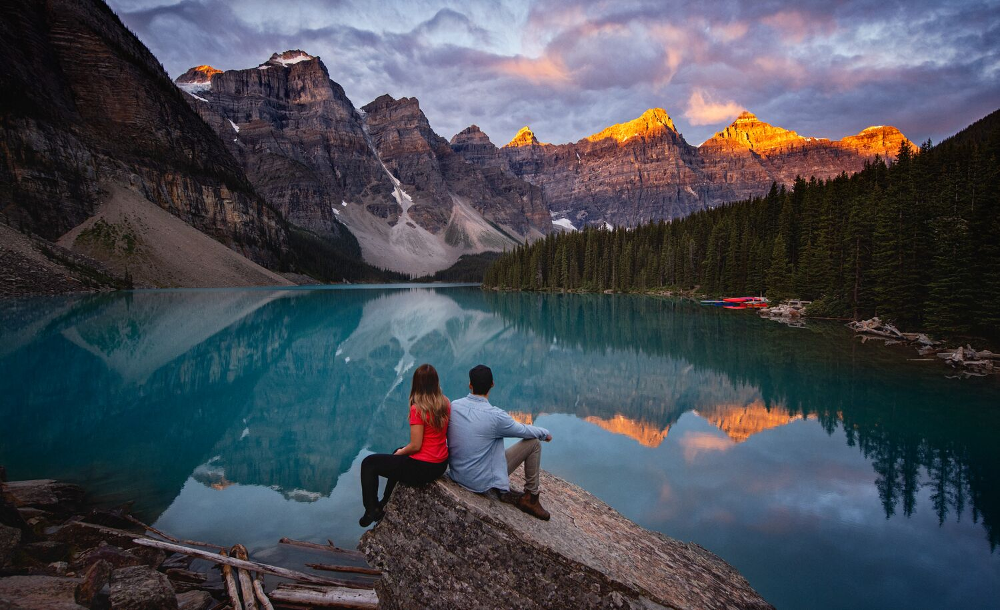
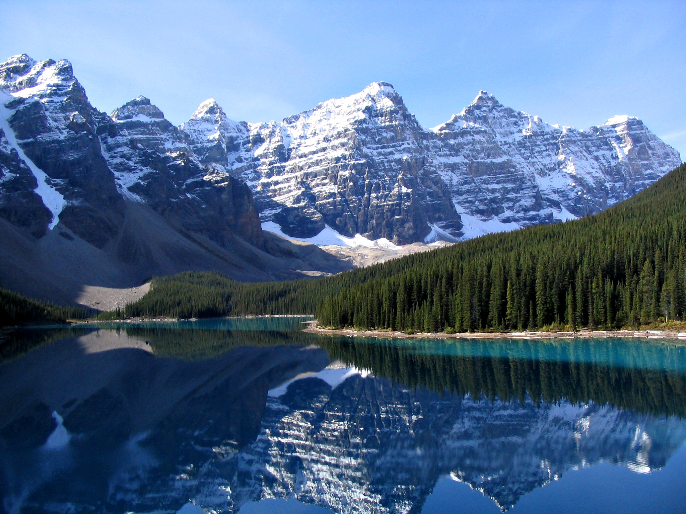
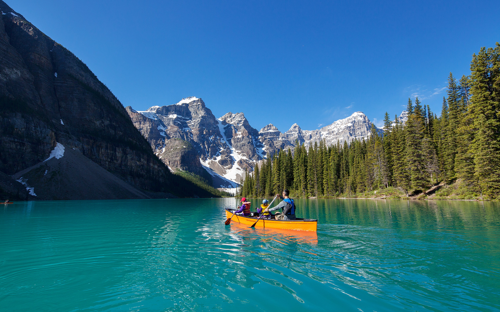
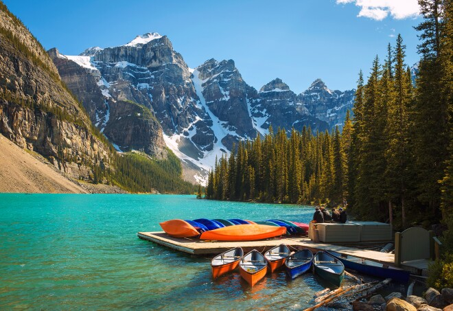
Při návštěvě Moraine Lake se ocitnete v srdci kanadských Rockies. Okolí jezera nabízí zážitek pro každého milovníka přírody – ať už jde o procházku hustým jehličnatým lesem, nebo náročný výstup na okolní hřebeny. Oblíbené stezky, jako je například ta do Larch Valley, vás provedou voňavými lesy až na alpinské louky, odkud se otevírají úchvatné výhledy na skalnaté štíty. Na podzim se navíc zdejší modřínové lesy barví do zlata, což v kombinaci s ledovcovým jezerem a zasněženými vrcholky hor vytváří jednu z nejkrásnějších scenérií v Kanadě.
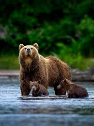
Tento mohutný vládce hor se v okolí jezera často pase na lesních plodech a koříncích. Kvůli jeho ochraně i bezpečnosti turistů je v některých sezónách vstup na okolní stezky povolen pouze ve skupinách. Poznáte ho podle typického svalnatého hrbu na zádech.
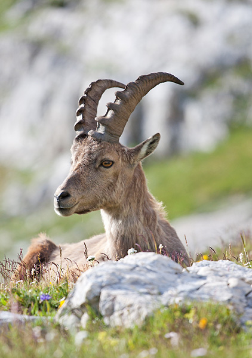
Tyto bíle zbarvené šplhavce najdete vysoko na strmých skalnatých útesech nad jezerem. Díky svým speciálně tvarovaným kopytům se dokážou pohybovat i po těch nejnebezpečnějších srázech. Z dálky vypadají na šedých skalách jako malé bílé tečky.
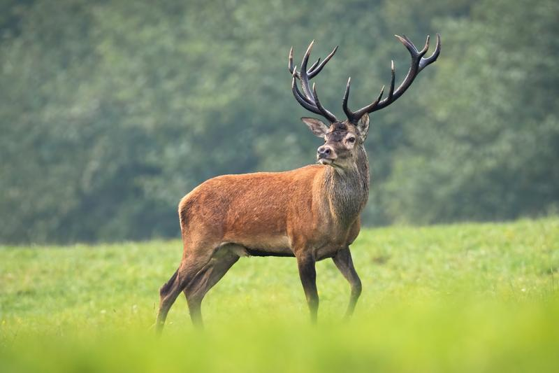
Wapiti je majestátní jelen, kterého u jezera často uvidíte na lesních mýtinách nebo u břehů. Na podzim se údolím rozléhá jejich hlasité troubení, kterým samci vábí své partnerky. Jsou symbolem místní fauny, ale je důležité si od nich udržovat bezpečný odstup.
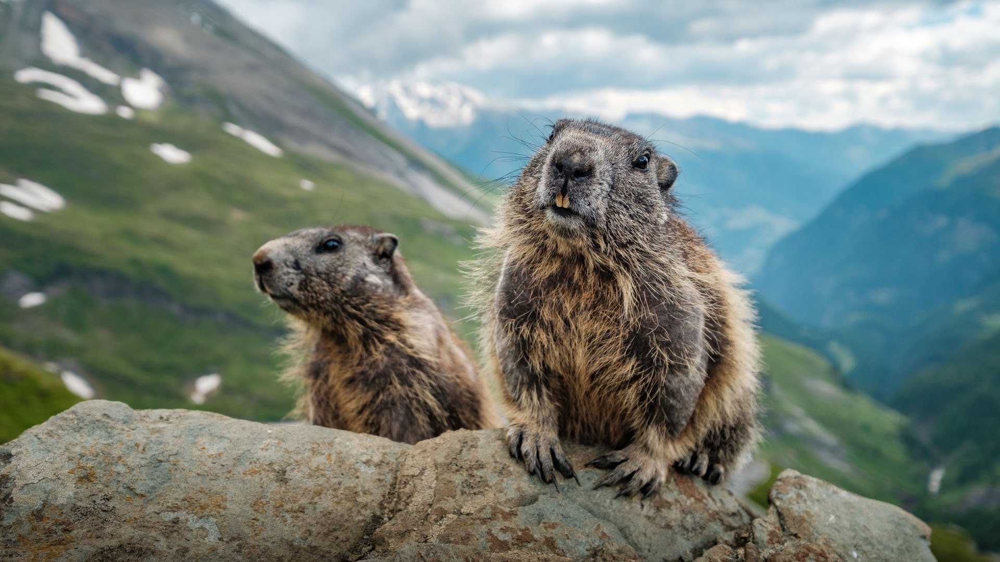
Tohoto huňatého hlodavce nejčastěji potkáte u kamenného valu „Rockpile" přímo u břehu jezera. Jsou známí svým pronikavým hvízdáním, kterým varují ostatní před nebezpečím. V létě se rádi vyhřívají na balvanech a pozorují procházející turisty.